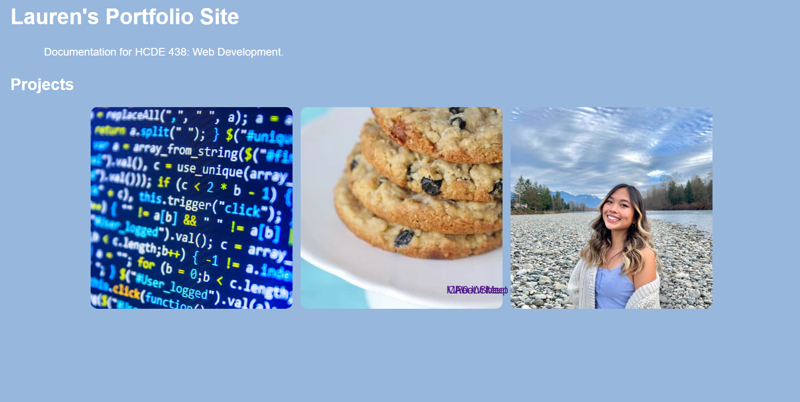

MP0 Writeup
Overview
I approached this assignment by first reading all recommened readings pertaining to: HTML, CSS, files, etc. Next, I looked through the example website to understand what each element does. After reviewing these materials I started on my site. I copied over the code from the example sites keeping pieces like the image buttons while removing things like formatting and inputting my own photos and information. Lastly, I cleaned up the CSS a bit in accordance to how I wanted my site to look. I've attached a snip of my unfinished landing page that lacked proper labels and had less style.
Issue
I think the hardest part about creating this site is understanding how to reference to the CSS sheet or other files from the HTML file. I have a hard time navigating to the files using ./ or // or no slashes at all. Once I've referenced the style sheet though, I still need to be really thorough that I'm referencing the proper objects across my CSS and HTML. I originally had a CSS sheet for each page but realized it'd be difficult to keep track of. Now, I just need more practice using HTML and CSS to become more familiar with it.
CSS Transition
For my CSS transition I decided to make my buttons jiggle. I chose this transition because I thought it was pretty cool that you can make something look like it jiggles by using less time in the transition and just moving the object ever so slightly.

Ideas & Future
- Create a navigation bar up top for About Me and Cheatsheets
- Change the project buttons so on hover, the image is different
- Add more images and maybe even videos
- Play around with other transitions